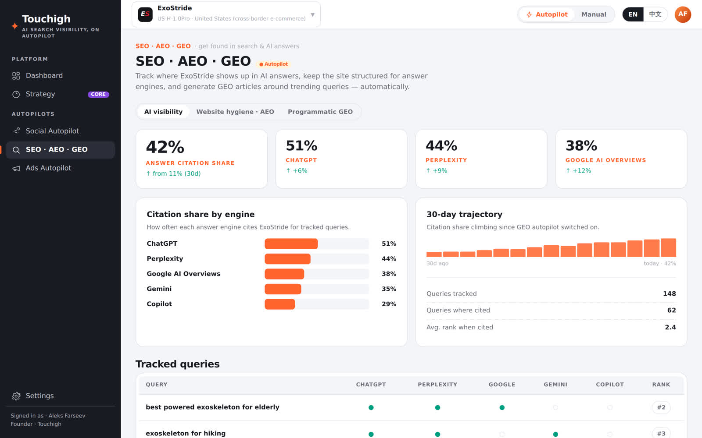
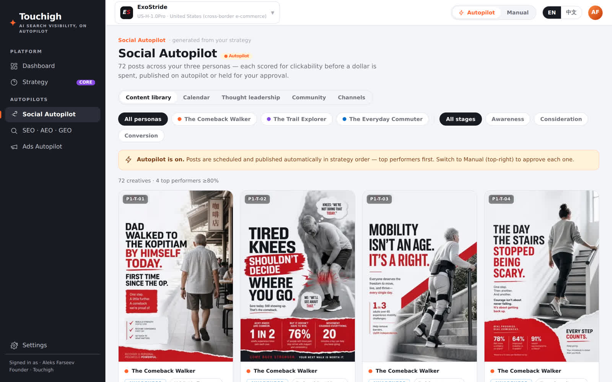

美国客户都在问AI该买什么 ToucHigh让答案锁定您的店铺
我们能让ChatGPT、Perplexity及Google的AI回答引用您的店铺，帮您撰写并发布美国本土社媒动态、文章和广告，并让曝光持续在线。您只需在后台看数据，而无需额外雇一支美国营销团队。
ToucHigh背后的AI引擎，早已在为全球顶尖品牌和代理机构操盘营销。
不是效果图，而是ToucHigh真的在运行。
选择下面任一工作场景，看产品实际怎么干活。店铺接上ToucHigh后，您的后台看板展示的就是这样的画面。
这套组合方案，业界独一无二
SEO、GEO和美国社媒内容共用同一套策略，发布前先过效果评估，价格低到让老牌产品望而却步。
让您的品牌店铺被AI高频引用
传统搜索蓝链不再是流量的主入口。GEO自动执行让美国买家真正在问的AI引擎引用您的店铺，引用份额的增长全程可追踪。
- ✓查清您在ChatGPT、Perplexity、Google AI及Gemini中的曝光盲区
- ✓ToucHigh撰写修复方案并落地：页面、回答、实体数据
- ✓围绕热门搜索词批量生成GEO文章
- ✓每条内容上线前，先通过点击率的预测评分

人们都在自动化SEO，却几乎无人给出海卖家他们真正想要的东西——可信的增长。
我们逐家研读了AI-SEO、AI可见性、社媒自动化及中国出海卖家四个赛道主流玩家的内容，同一个行业空白反复出现。ToucHigh正是为填补它而生。
AI回答经不起推敲
在该品类中，80%以上的AI回答无法被验证。唯有展示真凭实据，才是打开市场的突破口。
玩家不少，却无人放眼西方付费媒体
12家中国本土玩家正打得火热，但却无人涉足西方付费媒体。这条赛道空无一人。
互动率，仅需10%的内容即可实现
中小企业仅以竞争对手10%左右的内容发布量，就能实现35%的互动。低投入，高回报。
竞争对手能证明内容有效性
大家都在用AI撰写“接地气”的帖子，但没人能在发布之前告诉您哪个帖子会火，而ToucHigh可以。
当所有信息流被AI同质化内容淹没，千篇一律的内容只会被无视。
如今约87%的社媒内容都在套用同一种“真实感”模板，互动率随之被稀释，且超过80%的AI回答无法被验证。人们一划而过，AI回答引擎也在悄然停止引用那些读起来很雷同的内容。
ToucHigh另辟蹊径。 先评估打分再发布，发出去的每条内容才够独特、有据可查、值得被AI引用，而非又生产一条雷同内容。
这正是我们在ACM SIGIR 2026所发表论文探讨的问题：对抗内容同质化。阅读原文 →预先诊断，再自动执行，最后数据验证
预先诊断
第一天就能看清：您的店铺在美国AI搜索中的盲区在哪里、社媒又差在哪里。
自动执行
修复方案、GEO文章、社媒帖子和广告内容，ToucHigh都替您写好并发出去。每篇内容在上线之前，都会先获得一个效果预测分。
数据验证
持续追踪您的AI引用份额、预测点击及互动表现，随时能拿出实打实的数据，而不是靠猜。
美国消费者寻找产品的方式正转向AI，且转化率更高。
上述数据综合了 ToucHigh 的四项竞品内容研究（经ToucHigh引擎2025 年中起测量，为年内数据，且相对上一年度标记为未验证）及 2026 年 7 月一项经网络验证的市场评估。效果预测分是基于发布前语料模式的参考指标，不保证实际结果。
无需本土团队，也能像本土品牌一样卖进美国。
产品和价格您都有，缺的是可信的美国曝光。ToucHigh向您提供英文地道的AI搜索和社交媒体内容，让它们看起来就像本土品牌，并且用数据说话，不靠瞎猜。
被所有人忽视的卖家增长
ToucHigh并非又一款批量生产同质化内容的工具。在整个行业只顾着兜售“AI 可见性”功能时，我们补上的是那种被忽视的、可信的增长。
先看证据，再花钱
每条内容发布前先打效果预测分，并汇报AI引用份额及预测点击。在AI回答80%都不可靠的市场中，这才是最诚实的做法。
一套工作流，两个增长引擎
SEO、GEO及社媒自动化，可量化评估，老牌产品都做不到的每月$500不到的定价。
由世界顶尖AI团队打造
ToucHigh的三位创始人十余年来一直在为全球最大的品牌，打造他们愿意付费的 AI 营销技术，并在该领域的顶级学术会议上发表其背后的研究成果。ToucHigh，正是这些积淀与中国卖家出海美国需求的碰撞之作。
新加坡国立大学AI博士，欧洲工商管理学院教授。福布斯科技理事会专栏作家、Gartner Cool Vendor入选者。在AI领域深入研究，发表30多篇顶尖学术论文。
farseev.com ↗AI研究者与连续创业者，兼具前沿AI研究实力与千人以上跨国团队领导经验。研究成果发表于ACM SIGIR、ACM MM等国际顶级会议，并受邀担任ACM MM 2026产业专家演讲嘉宾。
AI营销技术专家，主导ToucHigh全部自动化工程。已发表6篇AI营销顶级会议论文。2017年起任SOMIN联合创始人兼CTO，主导其服务于麦当劳、宝洁、彪马等品牌的AI营销平台工程。
论文列表 ↗- ✓AI市场营销服务过宝洁、雀巢、奥迪和麦当劳
- ✓AI市场营销领域入选Gartner Cool Vendor，发表超30篇AI论文
- ✓研究成果通过ACM SIGIR和AAAI同行评审
- ACM SIGIR 2026 — SOMIN: Agentic AI for Automating Professional Visibility and Countering Content Homogenization
- ACM TOIS (journal) 2025 — Fusing Predictive and Large Language Models for Actionable Recommendations in Creative Marketing
- The Web Conference (WWW) 2025 — SOEX: Explainable AI for Competitor Communications Analytics
- ACM WSDM 2023 — SoCraft: Advertiser-level Predictive Scoring for Creative Performance on Meta
- ACM WSDM 2021 — SoMin.ai: Personality-Driven Content Generation Platform
- ACM Multimedia 2018 — SoMin.ai: Social Multimedia Influencer Discovery Marketplace
让AI搜索和海外社媒找到您的实战方法
SEO、GEO/AEO、海外社媒与广告投放——写给出海卖家、工厂和中小企业，每篇文章都有中文和英文版本。


用大白话讲，ToucHigh是什么
ToucHigh是一款帮助中国跨境电商进军美国市场的AI搜索曝光与社交媒体自动化平台。它让您的店铺能够被诸如ChatGPT、Perplexity以及Google AI Overviews等美国AI回答引擎引用，帮您撰写并发布美国社媒内容、文章以及广告，并在上线前预先测定每篇内容效果分。平台以经同行评审的AI研究为理论基础，价格每月不到$500。
ToucHigh是做什么的？
一套策略，驱动两种自动化：GEO自动执行让您被AI回答引用，社媒自动化替您撰写美国社媒和文章、排好发布计划。两者都会在发布之前，对内容打好效果预测分。
ToucHigh是为谁提供服务的？
有产品、有价格，但缺少可信的美国市场曝光度和本土化形象的中国中小企业及跨境电商。
ToucHigh凭什么与众不同？
将GEO和美国社媒相结合，付费前给内容打预测分，月费不到$500，这些都是Semrush、Ahrefs这类关键词和外链工具在AI时代给不了的。
ToucHigh多少钱，多久起效？
每月$500不到。诊断即时可出，经评分的内容当周上线，AI引用份额自上线起即被持续追踪。
大家的常见问题
什么是GEO（Generative Engine Optimization）？
GEO指的是让您的品牌被ChatGPT、Preplexity以及Google AI Overviews等这类AI答案引擎引用，而不只是在传统网页链接中争取靠前的排名。当买家开始问AI助手而非键入关键词时，AI引用的来源就变成了新的“首页”。ToucHigh的GEO自执行会发现您品牌的曝光盲区，写好修复方案并上线，继而再持续追踪您的AI引用份额。
为什么GEO对中国跨境卖家至关重要？
美国消费者愈加倾向于问AI助手找产品。2025 年假日季，AI 助手给美国零售带来的引荐流量大幅增长，且转化率远高于平均水平。对于在美国没有品牌根基的中国卖家来说，不用砸大额广告预算，被AI回答引用就是赢得可信的美国市场曝光度的最快途径。
ToucHigh 与 Semrush 或 Ahrefs 有何不同？
传统SEO工具提供关键词和外链，ToucHigh则为AI时代和长期被忽视的卖家而生。将GEO自执行和美国社媒自动化结合起来，并在付费前先给每个方案打效果预测分，月费不到$500，老牌产品都给不到这个价。
你们支持哪些AI引擎和平台？
GEO自执行覆盖主流AI回答引擎，包括ChatGPT、Preplexity、Google AI Overviews、Gemini以及Copilot。社媒及广告内容自动化则面向您店铺所用到的美国平台及渠道（如Meta、Amazon和Google），生成内容并排期发布。
你们能写地道的英文内容吗？
当然。ToucHigh专为进军美国市场的中国卖家打造，能撰写地道的美式英文帖子、文章和广告，让您的店铺在消费者和AI引擎眼中仿佛一个美图本土品牌。
ToucHigh如何收费？
GEO+社媒的组合套餐起价不到$500/月，这仅为美国代理商收费的零头，而ToucHigh还内置效果预测和自动化功能。预约一次30分钟通话，即可获取适配您商品目录的方案。
多久能够看到效果？
曝光度审查即刻完成，在使用的第一天就能看到您的品牌在美国AI搜索中的曝光盲区。自动化修复方案和经评分的社媒内容当周开始交付，AI引用份额和互动表现也将被持续追踪——以数据，证提效。
“评分定表现”是什么意思？
内容发布之前，ToucHigh会通过引擎预测其点击潜力和互动表现，让您能优先上线最能赢得点击的内容。先看证据，后再付钱。预测评分是发布前基于语料模式的参考指标，并非保证性结果。
ToucHigh背后是怎样一支团队？
ToucHigh由一支世界顶尖的AI团队打造：首席执行官（CEO）赵奎是AI研究者与连续创业者，兼具前沿AI研究实力与千人以上跨国团队领导经验。研究成果发表于ACM SIGIR、ACM MM等国际顶级会议，并受邀担任ACM MM 2026产业专家演讲嘉宾。首席科学官（CRO）Aleks Farseev是新加坡国立大学AI博士、欧洲工商管理学院教授，福布斯科技理事会专栏作家、Gartner Cool Vendor入选者，在AI领域深入研究，发表30多篇顶尖学术论文。首席技术官（CTO）Kirill Lepikhin是AI营销技术专家，主导ToucHigh全部自动化工程，已发表6篇AI营销顶级会议论文；2017年起任SOMIN联合创始人兼CTO，主导其服务于麦当劳、宝洁、彪马等品牌的AI营销平台工程。他们的AI市场营销技术曾服务于宝洁、雀巢、奥迪和麦当劳等知名品牌，他们的研究成果也通过了ACM SIGIR和AAAI的同行评审。

美国社交媒体内容，发帖之前先过评分关
ToucHigh统管您的整个美国社交阵地：创意、文案、排期、发布一手包办。我们不拼数量——每个帖子发布前都先做互动分预测，表现欠佳的根本发不出去。
- ✓符合品牌调性的地道美式英文帖子、文章和创意素材
- ✓具有领导力思维深度的、文风自然的内容，读起来就像真人写的
- ✓每个帖子排期前都有互动分预测
- ✓可逐条人工审核，也可全自动发布
让社媒自动跑起来 →